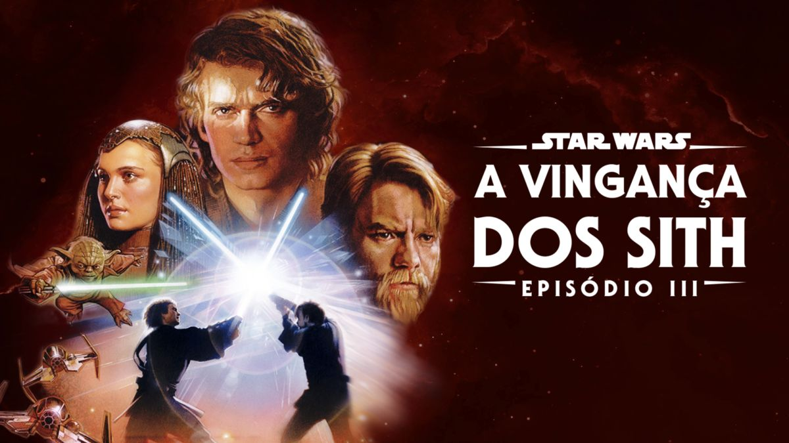

Poderes Descontrolados à Beira do Caos: A Ameaça Crescente da Feiticeira Escarlate Abala a Ordem Global!
Um fenômeno alarmante está tomando forma no cenário internacional à medida que a figura enigmática conhecida como Feiticeira Escarlate continua a exercer poderes mágicos de proporções inimagináveis. Esse crescente poder...
Ler mais

Experimentação Genética Desenfreada: A Chocante Origem de Rocket Raccon Revela Consequências Sombrias da Manipulação Biológica!
A história por trás da origem do personagem Rocket Raccon, conhecido como membro dos Guardiões da Galáxia da Marvel, não apenas intriga os fãs, mas também joga luz sobre as sombrias implicações da experimentação genética desenfreada...
Ler mais

Realidade em Colapso: 'Homem-Aranha: Sem Volta Para Casa' Sacode Audiências com Enredo Alucinante que Desafia os Limites da Existência!
O aguardado filme "Homem-Aranha: Sem Volta Para Casa" finalmente chegou aos cinemas, deixando fãs e críticos em um estado de choque e maravilhamento. A narrativa ousada...
Ler mais

Tragédia Galáctica Desvendada: 'Star Wars: Episódio III - A Vingança dos Sith' Revela Queda Abrupta do Herói Jedi em uma Espiral de Escuridão e Destruição!
Star Wars: Episódio III - A Vingança dos Sith" emerge como uma jornada assombrosa em uma galáxia muito, muito distante, desvendando uma tragédia cósmica que...
Ler mais
Confronto Cósmico Iminente: Universo Marvel e Universo DC à Beira de uma Batalha Épica que Abala o Tecido do Multiverso!
Um conflito de proporções épicas está prestes a irromper à medida que os Universos Marvel e DC, que há muito coexistem no multiverso da cultura pop, se encontram à beira de um embate monumental...
Ler mais
Impacto Cultural Profundo: Série 'Rick and Morty' Eleva Questões Existenciais e Desafia Normas com seu Humor Ácido e Desconcertante!
A influência da série animada "Rick and Morty" está desencadeando ondas perturbadoras no mundo do entretenimento, enquanto desafia expectativas e questiona noções de humor convencional...
Ler mais

Desvendando 'Love, Death e Robots': Série de Antologia Desperta Preocupações Profundas sobre Futuros Distópicos e Impactos Tecnológicos!
A série de antologia "Love, Death e Robots" emerge como um eco alarmante das inquietações tecnológicas e sociais de nossa era moderna. Ao examinar cada episódio de forma meticulosa...
Ler mais

Desespero Cósmico: 'Interestelar' Narra uma Epopeia Angustiante em Busca da Salvação da Humanidade em um Universo à Beira do Colapso!
O épico cinematográfico "Interestelar", dirigido por Christopher Nolan, emerge como um apelo alarmante em um mundo à beira do abismo cósmico. A narrativa intrincada e sombria do...
Ler mais
Desvendando a Matrix: Realidade Virtual Alimenta Pesadelos Tecnológicos em uma Sociedade à Beira do Colapso!
A obra cinematográfica icônica "Matrix", dirigida pelos irmãos Wachowski, ecoa como um alerta urgente em um mundo cada vez mais enredado nas redes da tecnologia. Uma análise meticulosa do filme revela uma distopia...
Ler mais
Estrelas Além do Tempo: Desvendando o Impacto Oculto de um Legado Ousado que Desafia a Discriminação Racial e a Desigualdade de Gênero!
"Estrelas Além do Tempo" emerge como uma narrativa arrebatadora que lança luz sobre um capítulo sombrio da história norte-americana, expondo as profundezas de preconceito sistêmico e desigualdade de gênero que permeavam as...
Ler mais